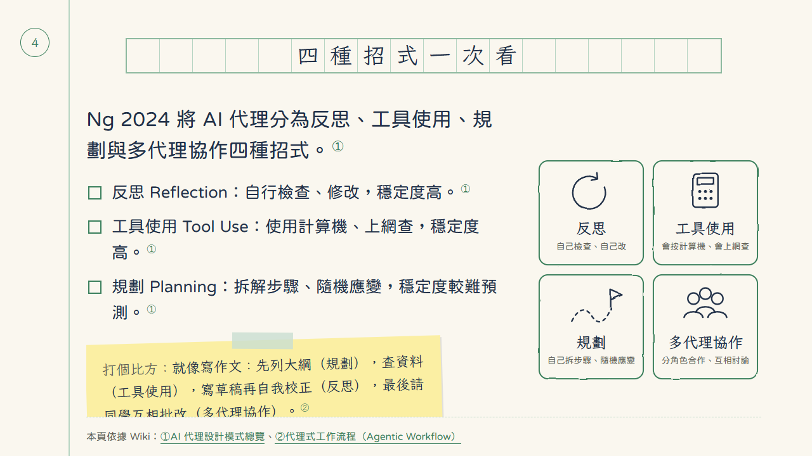
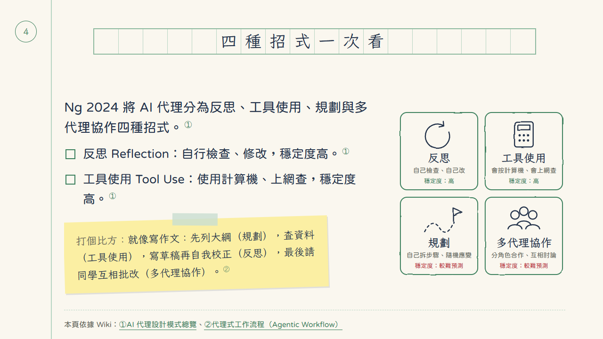

AI代理設計模式
生成式 AI 作業：用 LLM Wiki 做一份教學 HTML 簡報
這份作業把 7 篇關於 AI 代理的文章整理成一個 LLM Wiki，再寫一條 LangGraph＋Groq 的 pipeline，讀這個 Wiki 產生一份給非資工大學生看的 18 頁教學簡報。每一頁簡報都標出依據的 Wiki 頁，每一次執行都留下完整的檢查紀錄。
主題與簡介
「AI 代理設計模式」講的是：怎麼讓大型語言模型（LLM）不只回答一次，而是像人一樣分步驟把事情做好。主要有四種招式：反思（Reflection）、工具使用（Tool Use）、規劃（Planning）、多代理協作（Multi-agent Collaboration）。另一個重點是「工作流程（workflow）」和「代理（agent）」該怎麼選。讀者設定為用過 ChatGPT、但不懂程式的非資工大學生。
Wiki 的做法照 Karpathy 的〈LLM Wiki〉：分成三層，由 LLM 維護中間那一層。每篇資料都先討論、後生成：LLM 讀完原文先寫提案，作者回覆之後才寫進 Wiki，作者的回饋原話和最後決定都留在 discussions/。
raw/作者蒐集的 7 篇原文，唯讀。原文有著作權，不上傳，只上傳出處清單。
wiki/LLM 建立並維護所有頁面；作者負責閱讀、提問、決定重點。
CLAUDE.md頁面格式、概念頁的 8 個固定段落、Ingest／Query／Lint 的流程。
7 篇資料（依 ingest 順序）
| # | 資料 | 作者 | 年份 | 在 Wiki 裡負責 |
|---|---|---|---|---|
| 1 | Agentic Design Patterns（共 5 篇） | Andrew Ng | 2024 | 四種模式，整個 Wiki 的骨架 |
| 2 | Building effective AI agents | Anthropic | 2024 | 工作流程 vs. 代理，五種工作流程 |
| 3 | LLM Powered Autonomous Agents | Lilian Weng | 2023 | 代理＝LLM＋規劃＋記憶＋工具 |
| 4 | ReAct | Yao 等 | 2022 | 「想 → 做 → 看」迴圈 |
| 5 | Self-Refine（arXiv 預印本） | Madaan 等 | 2023 | 「寫 → 評 → 改」，以及自評的盲點 |
| 6 | How we built our multi-agent research system | Anthropic | 2025 | 多代理協作、怎麼評估代理 |
| 7 | Agent01–03 課程 notebook | 蔡炎龍 | 2026 | 反思、工具使用、規劃的實作 |
出處、網址、抓取日見 raw/README.md。
Wiki成果
7 篇資料逐篇 ingest 後，Wiki 長成下面這樣。每頁都有 frontmatter，事實性的句子句尾附來源頁連結；Wiki 自己歸納的說法標「Wiki 綜合」。
- 目錄每頁一行摘要index.md
- 總覽三種觀點、Ng 與 Anthropic 對照、15 條綜合理解overview.md
- 概念頁每頁 8 個固定段落，簡報從這裡取材19 頁
- 來源頁每篇資料一頁摘要7 頁
- 人物、組織、工具9 頁
- 查詢結果pipeline 設計、簡報大綱2 頁
- 討論紀錄7 篇 ingest＋1 次大綱審閱8 份
- 日誌每次 ingest、lint、query 都記一筆log.md
- 健檢斷連結、孤兒頁、缺來源、缺段落0 錯誤 0 警告
健檢還留著 1 個「待補缺口」：增強型 LLM 的「別用的時機」原始資料沒有提到，所以照實標成待補，沒有自己編。簡報 pipeline 每跑一次也算一次 Query，大綱回存 queries/slide-outline.md，並在日誌記一筆。
教學簡報
簡報的樣式叫「AI 的作文簿」：每頁是一張稿紙，標題寫在格子裡，生活比喻寫在便利貼上，數據用紅筆圈起來。點進預覽後可以用 ← → 翻頁；每頁底部的「本頁依據 Wiki」可以點回對應的 Wiki 頁。
開新分頁看完整簡報（按 N 打開講者備註）
教學順序
- 引起動機第 1–3 頁
同一題，GPT-3.5 加上代理迴圈勝過 GPT-4 - 四種招式第 4–11 頁
每種招式都配生活比喻和課程實作 - 怎麼選第 12–14 頁
跟團 vs. 自由行、能簡單就簡單、小測驗 - 限制與把關第 15–17 頁
代理會出包、人在迴圈中、小測驗 - 總結第 18 頁
五個重點打勾
每頁簡報依據哪些 Wiki 頁
大綱由 pipeline 擬好、作者審過（討論 08），每頁只拿得到這裡列的 Wiki 頁，引用也只能從這些頁裡選。
流程圖
整條 pipeline 是「帶閘門的提示鏈，加上評估者—優化者迴圈」。它是工作流程，不是代理：步驟固定、可以預期，誰在什麼時候做什麼都寫死在 graph 裡（工作流程 vs. 代理）。
| 會重複的地方 | 誰檢查 | 不合格時重新生成什麼 | |
|---|---|---|---|
| 大綱 | 擬大綱 ↔ 大綱閘門，最多 3 次 | 程式：頁數、結構、引用的頁存在；然後人審教學順序和圖 | 整份大綱，附上全部問題 |
| 投影片 | 改寫 ↔ 投影片閘門，最多 2 輪 | 先程式（字數、點數、引用、數字有沒有出現在 Wiki），通過才給 LLM 評審打分 | 只改不合格的頁，附上具體意見 |
| 版面 | 版面閘門 → 改寫，只修 1 次 | 無頭瀏覽器實際量每頁有沒有超出，並截圖存證 | 超出的頁，附上「約要刪幾字」 |
| 人工 | 看完紀錄後指定重審 | 人 | 指定的頁，從投影片閘門續跑 |
為什麼這樣設計
- 步驟固定，就用工作流程：寫簡報可以清楚拆成固定步驟，不需要讓 AI 自己決定下一步；能簡單就簡單（工作流程 vs. 代理）。
- 先檢查大綱再寫全文：提示鏈在步驟之間設閘門，大綱錯了就不必浪費整份全文（提示鏈）。
- 寫 → 評 → 改，但設上限並保留最好的版本：迭代有邊際效益遞減，也可能越改越差（Self-Refine）。
- 程式能確認的交給程式：LLM 自評有盲點，數學題的回饋 94% 都說「看起來都對」，所以字數、引用、數字先由程式檢查，LLM 評審只看程式檢查過的頁（LLM 回饋與自我評估）。
- 關鍵的地方讓人決定：大綱先停下給人審，最後由人看截圖決定要不要重審（人在迴圈中）。
- 能從出錯處續跑：多步驟的錯誤會累積，要能接著做而不是從頭來（代理的限制與風險）。
完整的設計依據（15 條原則、每個節點做什麼、v1 到 v3 改了什麼）見 wiki/queries/pipeline-design.md；程式在 pipeline/。
執行與檢查紀錄
pipeline 一共執行 6 次。每次都在 runs/<執行編號>/ 留下 report.md（各節點統計、每次閘門退件的原因）、calls/（每次 LLM 呼叫的完整提示和回應）和每頁截圖。
| 執行 | 版本 | 做了什麼 | 結果 | LLM 呼叫 | token |
|---|---|---|---|---|---|
| 000224 | v1 | 擬大綱後停下給人審 | ✓大綱閘門退件 1 次（標題超過 16 字），第 2 次通過；人審後調整了教學順序和圖 | 2 | 7,180 |
| 000549 | v1 | 一次寫 3 頁 | ✗15 頁只交回 6 頁，3 次格式錯誤，流程中止 | 16 | 18,327 |
| 001206 | v2 | JSON Schema 限制輸出，一次寫 1 頁 | ✗18 頁全部交回；第 0 輪退件 8 頁，16 個問題中 14 個是字數；第 2 輪網路斷線中止 | 112 | 106,097 |
| 002929 | v2 | 從斷線的地方續跑 | △產生簡報，但 4 頁被標記：s04、s13 超出版面，s05、s08 字數超過 | 18 | 27,291 |
| 024148 | v3 | 修好閘門，只重審 s04、s05、s08 | △報告寫「全部通過」，其實 s04、s15 沒過評審（誤報，報告最後附更正） | 11 | 15,182 |
| 024626 | v3 | 修好狀態判斷，重審 s04、s15 | ✓18 頁全部通過三個閘門，就是現在這份簡報 | 6 | 12,835 |
| 合計（執行編號省略了日期 20261113-） | 165 | 186,912 | |||
LLM 呼叫次數包含遇到 429 限流後的重試。Groq 免費方案每天 20 萬 token，所以最後兩次只重審被標記的頁，不重跑整份。
一次實際的檢查紀錄：第 4 頁「四種招式一次看」怎麼過關
這一頁被退件最多次，也最能看出閘門之間怎麼互相影響。下面的引號都是紀錄裡的原文。
- 001206 第 0 輪（初稿）
程式閘門退件「definition：66 字，超過上限 60 字」「points：要 0～3 點」初稿寫了 4 點，定義也太長。 - 001206 第 1 輪
LLM 評審平均 0.825，不通過「缺少多代理協作的招式說明……建議在 points 加入一項」評審要求補第 4 點，但這種頁最多 3 點：這個建議做不到。 - 002929 第 2 輪
程式閘門退件「points：要 0～3 點」改寫照評審的建議加到 4 點，又被程式擋下。 - 002929 第 3 輪
LLM 評審又說缺少多代理協作。輪數用完，留下分數最高的第 1 輪版本。 - 002929 版面檢查
版面閘門超出 38px，修一次後還是 38px：「保留分數最高的版本」又把放不下的舊版選回來了。 - 024148（v3，閘門修好後）
程式閘門退件「points：要 0～2 點」新規則：有圖的頁最多 2 點。版面問題在程式閘門就先擋下，不必等到渲染。 - 024148 第 2、3 輪
LLM 評審goal 只給 0.6，要求寫滿四種模式；改寫照做，定義寫到 75 字、又變 4 點，程式閘門再退件。最後的狀態卻誤報「全部通過」。 - 024626（評審加上「goal 和上限衝突」的規則）
通過評審四項都 1.0，版面閘門通過。最後再把模板的四種模式圖加上穩定度，讓圖和文字一起達成這頁的目標。


反思
哪個節點最容易出錯？
被閘門退件最多的是寫投影片的兩個 LLM 節點：draft_slides、revise_slides。v1 一次寫 3 頁時會漏頁、格式寫錯；v2 改成一次 1 頁、用 JSON Schema 限制輸出後，格式錯誤歸零，剩下的大多是字數超過。
但追下去才發現，退件不全是撰稿的錯，檢查的節點也會出錯，而且錯了不會自己發現：
- 程式閘門量錯東西：它用字元數算字數，英數字也算一個字，可是版面上英數字只佔半格。v2 所有版本合計 18 次「字數超過」，改用版面寬度重算只剩 4 次。
- LLM 評審會提出做不到的修改：它要求寫滿四種模式，可是這頁最多 2～3 點。改寫照做，又被程式閘門擋下，第 4 頁就這樣來回了 4 次。
- 最後的狀態判斷用了平均分數，但閘門的標準是「最低分 ≥ 0.7」，結果把兩頁沒通過的投影片報成「全部通過」。
- 版面閘門只在 1280×776 一種尺寸量。做這一頁的預覽框時才發現：比 1280px 窄的視窗裡投影片會偏掉，手機上整張跑出畫面。現在版面閘門也會用手機和小筆電的尺寸再量一次。
所以我的結論是：最常出錯的是 LLM 生成節點，但最危險的是檢查節點出錯，因為沒有人再檢查它。這四個問題都是人看截圖、紀錄或實際打開頁面時抓到的，正好印證 Wiki 說的「別只靠自動評估，人工測試不可少」（如何評估代理）。
發現問題後，把檢查提前到哪一步？
- 格式、引用從投影片閘門 → 生成的當下：用 Groq 的 strict JSON Schema，輸出格式錯不了；
cite用 enum 限定，只能選這頁拿到的 Wiki 頁。 - 字數從閘門退件 → 撰稿提示：寫明算法、請模型比上限少寫四分之一；退件意見也改成「請改寫到幾字以內」的具體目標。
- 版面從版面閘門（要先渲染、開瀏覽器量） → 程式閘門：有圖的頁最多 2 點，渲染之前就擋下。
- 評審的建議從改寫後才被程式擋下 → 評審的提示：附上欄位上限和圖的內容，goal 和上限衝突時以上限為準。
- 下一步goal 和上限衝突的根源在擬大綱：應該再往前移到大綱閘門，讓擬大綱時就知道每種頁型放得下幾點。這次額度不夠重跑大綱，先記在設計文件裡。
是否修改了 workflow / graph？為什麼？
- v1 → v2，graph 不變、改節點內部：一次寫 1 頁、JSON Schema 限制輸出、某頁失敗就記成缺頁交給閘門，不讓整條流程中止。問題出在「怎麼呼叫 LLM」，不在流程。
- v2，加上續跑的邊：網路斷線讓已經花掉約 10 萬 token 的執行中止，所以
load_wiki可以直接接到出錯的節點（resume.json）。第 1 輪之後也改成只重審改過的頁，因為每天的 token 有上限。 - v3，加上人工重審的入口：人看完紀錄後用
pipeline.recheck指定要重審的頁，從投影片閘門續跑；「保留最好的版本」改成先看有沒有通過、再比分數，超出版面的版本不能留下。 - 沒改的：它還是工作流程，沒有改成代理。每次出錯都能在固定的節點找到原因、只修那個節點，這正是當初選工作流程的理由。